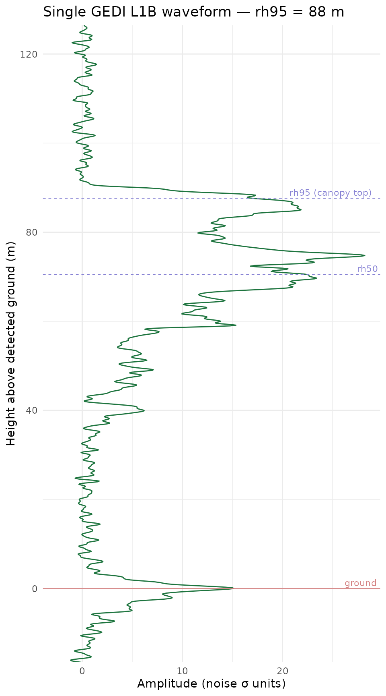
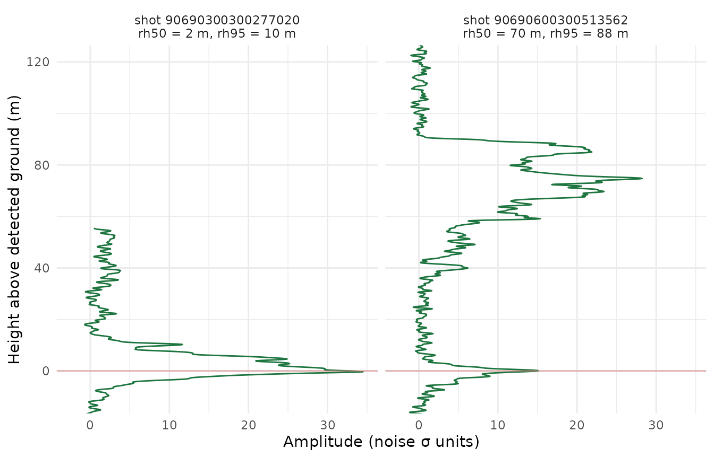
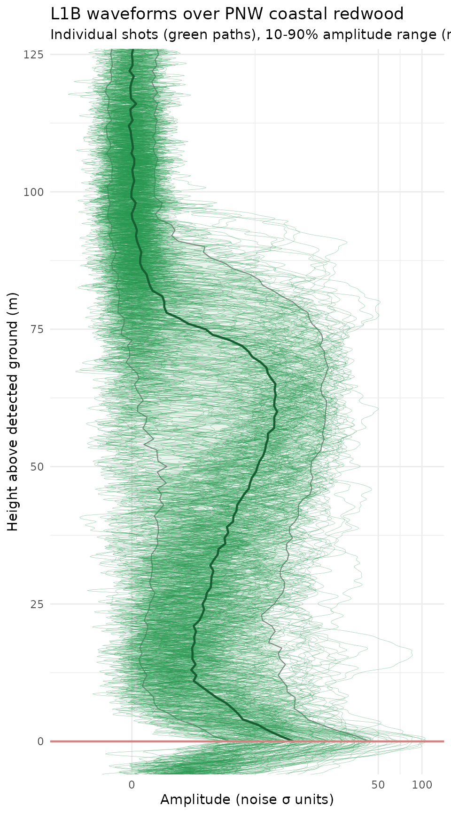
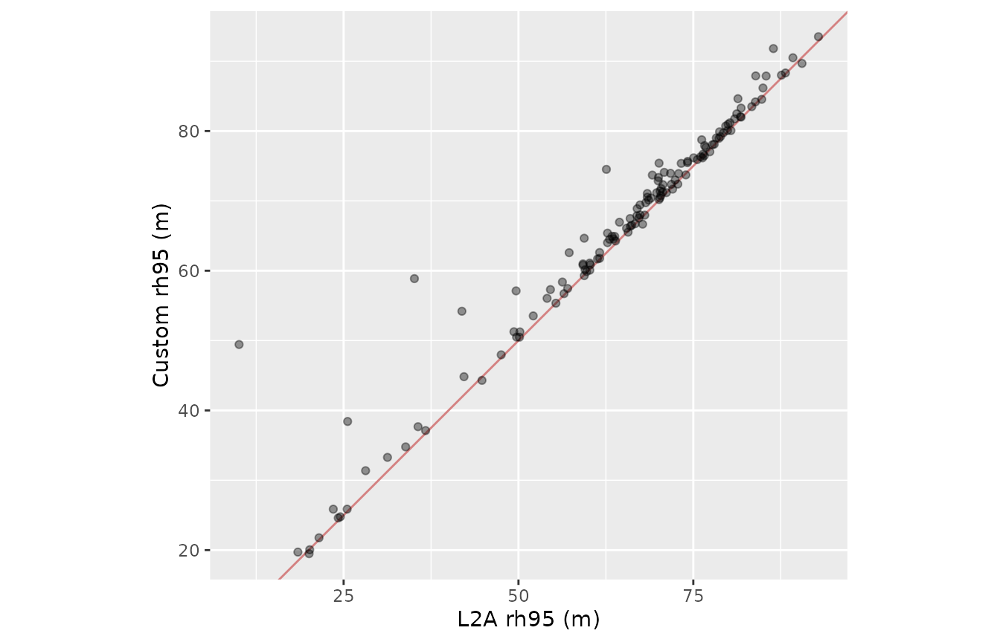

GEDI L1B waveforms: from raw returns to height above ground
Source:vignettes/gedi-l1b-waveforms.Rmd
gedi-l1b-waveforms.RmdWhat’s a GEDI L1B waveform, and why bother?
GEDI L2A gives you summary elevation metrics per shot — ground elevation, relative height quantiles (RH0 through RH100), canopy energy totals. That’s what most users want most of the time. L1B is the step before: one full waveform per shot, capturing the lidar return amplitude as a function of elevation. The L1B waveform has already been smoothed with a Gaussian of width 2 ns to remove ADC sampling artefacts (Hofton & Blair, 2019, Section 3.2.3); it is not the raw telemetered signal (that lives in L1A, which is not publicly distributed). Everything in L2A is derived from L1B by peak detection, additional smoothing, and mode fitting.
Working directly with L1B is worth it when you want to:
- See canopy structure, not just metrics derived from it
- Detect features L2A’s algorithms didn’t capture (understory layers, near-ground returns in steep terrain, water-surface returns)
- Build your own metrics or validate L2A’s ground detection against the L1B signal
This vignette walks from L1B waveforms to
height-above-detected-ground plots by joining L1B with L2A on
shot_number and using L2A’s elev_lowestmode as
the per-shot zero reference.
Setup
We’ll work over a small bbox on the Pacific Northwest coast — coastal redwoods, 50–100 m tall — where the difference between “height above ellipsoid”, “height above SRTM”, and “height above detected ground” is dramatic enough to be visually obvious.
Search and read both products
Search is cheap, so we issue it twice — once per product — and
sl_read over the shared bbox. Restrict to a single granule
per product to keep the vignette snappy; remove the [1L, ]
for the full pipeline.
g_l1b <- sl_search(bbox, product = "L1B",
date_start = dates$start, date_end = dates$end)
#> ℹ Searching CMR for GEDI L1B granules
#> ✔ Searching CMR for GEDI L1B granules [551ms]
#>
#> ✔ Found 1 GEDI L1B granule.
g_l2a <- sl_search(bbox, product = "L2A",
date_start = dates$start, date_end = dates$end)
#> ℹ Searching CMR for GEDI L2A granules
#> ✔ Searching CMR for GEDI L2A granules [249ms]
#>
#> ✔ Found 1 GEDI L2A granule.
l1b <- sl_read(g_l1b[1L, ], bbox = bbox)
#> ℹ Reading L1B from 1 granule
#> ✔ Read 161 footprints from 6 beams.✔ Reading L1B from 1 granule [19.1s]
l2a <- sl_read(g_l2a[1L, ], bbox = bbox)
#> ℹ Reading L2A from 1 granule
#> ✔ Read 159 footprints from 6 beams.✔ Reading L2A from 1 granule [15.2s]l1b carries the waveform (rxwaveform,
already Gaussian-smoothed at the L1B processing stage) and its
structural metadata (elevation_bin0,
elevation_lastbin, rx_sample_count), plus
noise statistics, DEM references, and per-shot metadata.
l2a carries the processed ground elevation
(elev_lowestmode), quality flags
(quality_flag, sensitivity,
degrade_flag), and the relative-height quantiles
(rh0 through rh100).
Join L1B with L2A ground elevations
shot_number is the shared key. Two granules of the same
orbit over the same bbox cover the same shots, so a plain inner join
gives you waveforms and their detected ground elevations side by
side.
l1b_joined <- l1b |>
inner_join(
l2a |> select(shot_number, elev_lowestmode, quality_flag, sensitivity,
rh25, rh50, rh75, rh95, rh100),
by = "shot_number"
) |>
filter(
quality_flag == 1L, # L2A quality gate
sensitivity > 0.9, # only well-penetrated shots
solar_elevation < 0 # night shots for cleaner returns
)
nrow(l1b_joined)
#> [1] 157Quality filtering matters: L1B will happily hand you waveforms from shots L2A flagged as low-sensitivity (e.g. dense cloud cover, high solar contamination). Keep only the shots where L2A trusts its own ground detection.
Extract waveforms, then re-reference to ground
sl_extract_waveforms knows how to subtract DEM
references, but it doesn’t know about L2A ground. Extract in ellipsoidal
space (the default) and subtract elev_lowestmode per shot
post-hoc.
wf <- sl_extract_waveforms(
l1b_joined,
height_ref = "ellipsoid",
normalise_amplitude = "snr" # noise-normalised so beams/channels compare
)
# per-sample ground reference, looked up by shot
ground_by_sample <- l1b_joined$elev_lowestmode[
match(wf$shot_number, l1b_joined$shot_number)
]
wf$height_above_ground <- wf$elevation - ground_by_sampleheight_above_ground = 0 is now the detected ground
return; positive is canopy, negative is noise samples below ground where
the RX window continues.
We used normalise_amplitude = "snr" above, which
subtracts the per-shot noise mean and divides by the per-shot noise
standard deviation. This puts every shot on a common scale regardless of
which digitiser channel captured it (GEDI’s channels have different
baseline pedestals; without normalisation, waveforms from different
beams cluster at different baselines). The alternative
"noise" subtracts the mean but skips the division, leaving
amplitude in baseline-subtracted ADC counts; "raw" (the
default) returns the waveform as-is. SNR units are convenient for
overlaying multiple shots because the noise floor sits at zero with unit
variance across all shots, regardless of beam or channel. A value of 4
would mean “4 standard deviations above noise”, which provides an
intuitive scale for distinguishing signal from background.
Anatomy of a single waveform
Before stacking hundreds of shots into a composite, it’s worth
unpacking what a single waveform actually contains. Pick a shot with a
tall canopy (rh95 above 50 m) and plot its amplitude vs
height, annotated with the L2A-derived structural metrics.
tall_shot <- l1b_joined |>
arrange(desc(rh95)) |>
slice(5L) |> # 5th tallest rh95 (avoids possible outliers at the very top)
pull(shot_number)
wf_one <- wf |> filter(shot_number == tall_shot)
meta_one <- l1b_joined |> filter(shot_number == tall_shot)
ggplot(wf_one, aes(amplitude, height_above_ground)) +
geom_path(colour = "#1d743eff", linewidth = 0.5) +
geom_hline(yintercept = 0, colour = "#d48282",
linewidth = 0.4) +
geom_hline(yintercept = meta_one$rh50, colour = "#8782d4",
linewidth = 0.3, linetype = "dashed") +
geom_hline(yintercept = meta_one$rh95, colour = "#8782d4",
linewidth = 0.3, linetype = "dashed") +
annotate("text", x = Inf, y = 0,
label = "ground", hjust = 1.1, vjust = -0.4,
colour = "#d48282", size = 3) +
annotate("text", x = Inf, y = meta_one$rh50,
label = "rh50", hjust = 1.1, vjust = -0.4,
colour = "#8782d4", size = 3) +
annotate("text", x = Inf, y = meta_one$rh95,
label = "rh95 (canopy top)", hjust = 1.1, vjust = -0.4,
colour = "#8782d4", size = 3) +
coord_cartesian(ylim = c(-10, 120)) +
labs(
x = "Amplitude (noise σ units)",
y = "Height above detected ground (m)",
title = sprintf("Single GEDI L1B waveform — rh95 = %.0f m",
meta_one$rh95)
) +
theme_minimal()
Things to notice:
- The strong peak at 0 m is where L2A detected ground
— that’s why
height_above_ground = 0lines up with it. Before ground-referencing this peak sat at some ellipsoidal elevation; we shifted it to zero here. - The broader peak around
rh95is approximately the canopy top.rh95is defined so 95 % of the waveform energy (cumulative from ground up) has been returned by that height — you can see the waveform fall off sharply just above it. -
rh50marks the median of the return energy, usually mid-canopy. Betweenrh50andrh95is where most of the foliage signal lives. - Anything above
rh95is either sparse emergent canopy, atmospheric return, or noise — typically very low amplitude.
Comparing two shots: short vs tall
The same machinery over a different shot looks very different. Pick
one shot with low rh95 and compare it to the tall one
above.
# tall_shot is already defined from the anatomy section above
short_shot <- l1b_joined |>
filter(rh95 < 15) |> slice(1L) |> pull(shot_number)
wf_pair <- wf |>
filter(shot_number %in% c(short_shot, tall_shot)) |>
left_join(
l1b_joined |> select(shot_number, rh50, rh95),
by = "shot_number"
) |>
mutate(
label = sprintf("shot %s\nrh50 = %.0f m, rh95 = %.0f m",
shot_number, rh50, rh95)
)
ggplot(wf_pair, aes(amplitude, height_above_ground)) +
geom_path(colour = "#1d743eff", linewidth = 0.5) +
geom_hline(yintercept = 0, colour = "#d48282", linewidth = 0.3) +
facet_wrap(~ label) +
coord_cartesian(ylim = c(-10, 120)) +
labs(
x = "Amplitude (noise σ units)",
y = "Height above detected ground (m)"
) +
theme_minimal()
The short shot (open ground or low vegetation) is dominated by a single ground peak with almost no energy above a 10 metres. The tall shot has clear canopy structure: a ground return at zero plus a broad canopy-top return at 50-90 m.
Composite view across the bbox
Now that we know what one waveform looks like, let’s stack them all. We overlay the amplitude quantiles at each height so the composite reads as a structural profile rather than spaghetti.
wf_quantiles <- wf |>
filter(height_above_ground >= 0, height_above_ground <= 200) |>
mutate(h_bin = round(height_above_ground)) |>
group_by(h_bin) |>
summarise(
q10 = quantile(amplitude, 0.10, na.rm = TRUE),
q50 = median(amplitude, na.rm = TRUE),
q90 = quantile(amplitude, 0.90, na.rm = TRUE),
.groups = "drop"
)
ggplot() +
geom_ribbon(
data = wf_quantiles,
aes(xmin = q10, xmax = q90, y = h_bin),
fill = "#24964fff", alpha = 0.1, colour= "#888888ff", linewidth = 0.4
) +
geom_path(
data = wf,
aes(amplitude, height_above_ground, group = shot_number), colour = "#24964fff", linewidth = 0.1, alpha=0.6
) +
geom_path(
data = wf_quantiles,
aes(q50, h_bin),
colour = "#175e32ff", linewidth = 0.8
) +
geom_hline(yintercept = 0, colour = "#d48282", linewidth = 0.8) +
coord_cartesian(ylim = c(0, 120)) +
scale_x_continuous(trans = "pseudo_log") +
labs(
x = "Amplitude (noise σ units)",
y = "Height above detected ground (m)",
title = "L1B waveforms over PNW coastal redwood",
subtitle = "Individual shots (green paths), 10-90% amplitude range (ribbon), median (line)"
) +
theme_minimal()
#> Don't know how to automatically pick scale for object of type <integer64>.
#> Defaulting to continuous.
The median line is the “typical” waveform for this bbox: a sharp peak at ground, a secondary peak near median canopy height, decaying returns above it. The 10-90 % ribbon shows shot-to-shot variation — narrow bands mean consistent structure across the bbox, wide bands mean heterogeneous canopy (edge shots, gaps, short vs tall mixed).
Cross-check: compute your own RH metrics
RHN is the elevation at which N% of cumulative waveform energy (from ground up) has been returned. With the waveforms zeroed on ground, we can compute it in-place and compare against L2A.
# cumulative energy from ground up, per shot
rh_custom <- wf |>
filter(height_above_ground >= 0) |> # ignore below-ground noise
group_by(shot_number) |>
arrange(height_above_ground, .by_group = TRUE) |>
mutate(cum_energy = cumsum(amplitude) / sum(amplitude)) |>
summarise(
rh50_ours = approx(cum_energy, height_above_ground, xout = 0.50)$y,
rh95_ours = approx(cum_energy, height_above_ground, xout = 0.95)$y,
.groups = "drop"
)
#> Warning: There were 4 warnings in `summarise()`.
#> The first warning was:
#> ℹ In argument: `rh50_ours = approx(cum_energy, height_above_ground, xout =
#> 0.5)$y`.
#> ℹ In group 100: `shot_number = 90690600300513532`.
#> Caused by warning in `regularize.values()`:
#> ! collapsing to unique 'x' values
#> ℹ Run `dplyr::last_dplyr_warnings()` to see the 3 remaining warnings.
comparison <- l1b_joined |>
select(shot_number, rh50, rh95) |>
inner_join(rh_custom, by = "shot_number")
ggplot(comparison, aes(rh95, rh95_ours)) +
geom_abline(colour = "#d48282") +
geom_point(alpha = 0.4) +
coord_equal() +
labs(x = "L2A rh95 (m)", y = "Custom rh95 (m)")
If the points hug the 1:1 line, our simple-minded cumulative-energy
RH95 agrees with L2A’s more principled version. Disagreements identify
shots where L2A’s noise thresholding, smoothing, or algorithm selection
(selected_algorithm) produces a meaningfully different
answer than a naive cumsum. Those disagreements are L2A doing the
right thing, not the other way around ;).
What we skipped (and why)
-
Algorithm selection. L2A ships six algorithm
variants per shot and picks one via
selected_algorithm. Our cumulative-energy RH uses none of that machinery. -
Ground detection from scratch. We used L2A’s
elev_lowestmoderather than detecting ground ourselves. naive ground detection in dense canopy or steep terrain is tricky and likely to be worse than L2A’s algorithm; when you need the ground peak, read L2A. -
Noise mean is not independently corrected. Per the
ATBD (Section 3.2.1), “no corrections are currently applied to the mean
noise level; the value from the telemetered datapacket is recorded.” The
column name
noise_mean_correctedrefers to the noise mean of the corrected (smoothed) waveform, not to an adjusted mean. Onlynoise_stddev_correctedreceives an active correction (for odd-even sampler offsets, Section 3.2.2). This distinction is immaterial for the subtraction and SNR normalisation we perform here: the mean and standard deviation are measured on the same smoothed waveform we analyse, so the units match.
Further reading
- Hofton, M. A. & Blair, J. B. (2019). Algorithm Theoretical Basis Document for GEDI Transmit and Receive Waveform Processing for L1 and L2 Products, v1.0. NASA Goddard Space Flight Center. Covers L1B waveform smoothing, noise correction, and the L2A/L2B algorithm chain referenced throughout this vignette.